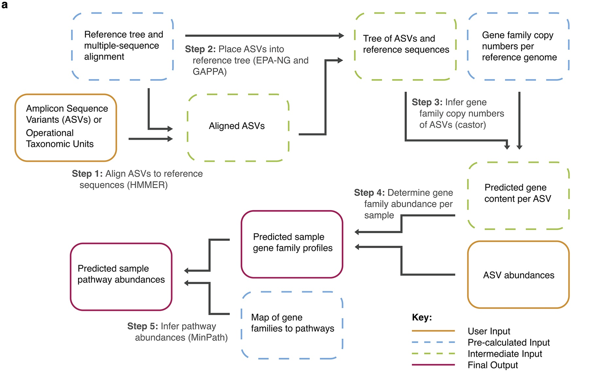

Chapter 6 PICRUSt2
This demo would guide you how to implement funciton analysis on 16S data
FlowChart_PICRUSt2}
PICRUSt2 algorithm
The Picture below shows the algorithm of PICRUSt2. Please find details on https://github.com/picrust/picrust2/wiki.

(a) The PICRUSt2 method consists of phylogenetic placement, hidden-state-prediction and sample-wise gene and pathway abundance tabulation. ASV sequences and abundances are taken as input, and gene family and pathway abundances are output. All necessary reference tree and trait databases for the default workflow are included in the PICRUSt2 implementation.
6.1 Environment Setup
Pull docker image of picrust2(authored by zhangzhikuan@xbiome.com) from server. You can skip this step if you have pulled docker image of picrust2 on your server already.
6.2 Run PICRUSt2
Check the required parameters of picrust2 docker image.
docker run -i --rm -u $(id -u):$(id -g) -v /home/tongbangzhuo/tongbangzhuo_Xbiome1/Project/PICRUSt2/:/in harbor.xbiome.com/xbiome/environments/picrust2:v2.4.1-03d011a bash -c "python picrust2_main.py --help"## usage: picrust2_main.py [-h] -i INPUTDIR -o OUTPUTDIR [-b REFDB] [-r RESOURCE]
## -p PARAM
##
## optional arguments:
## -h, --help show this help message and exit
## -i INPUTDIR, --inputdir INPUTDIR
## input dir
## -o OUTPUTDIR, --outputdir OUTPUTDIR
## The dir that where the result output to
## -b REFDB, --refdb REFDB
## required database path if needed, for example:
## "db_name:db_path", if there are more than 1 database,
## please join them by ","
## -r RESOURCE, --resource RESOURCE
## The resources that the module need,
## "cpu:2,mem:6,disk:6" or "cpu:2,mem:6" or "cpu:3"
## -p PARAM, --param PARAM
## JSON format config fileThree parameters are required:
- INPUTDIR, specify your dada2 output folder as the input of picrust2 docker image.
- OUTPUTDIR, specify the output dirctory. Don’t create the output folder your self, picrust2 docker image would take care of it.
- PARAM, config files of running picrust2 docker image. Usually use the default file in docker image: /opt/test/parameter_default.json
The whole process might take hours to finish. Demo data (3970 ASVs cost approximately 1 hour)
docker run -i --rm -u $(id -u):$(id -g) -v /home/tongbangzhuo/tongbangzhuo_Xbiome1/Project/PICRUSt2/:/in harbor.xbiome.com/xbiome/environments/picrust2:v2.4.1-03d011a bash -c "python picrust2_main.py -i /in/Demodata/ -o /in/output/ -p /opt/test/parameter_default.json"6.3 Use DA to interpret result table from PICRUSt2
There are many possible ways to analyze the PICRUSt2 output. STAMP is one tool that can be used that requires no background in scripting languages. This tool is very useful for visualizing microbiome data, but note that there are better alternatives for conducting statistical tests with compositional data (such as the ALDEx2 R package). If you would like to try out STAMP for visualizing the PICRUSt2 output, see here.
No matter what analysis approach you take, you should be aware that results based on differential abundance testing can vary substantially between shotgun metagenomics sequencing data and amplicon-based metagenome predictions based on the same samples. This is especially true for community-wide pathway predictions. Please check out this post and this response to a FAQ for more details.
But here, we carry out DA on KO profile table predicted from PICRUSt2 as demo.
6.3.1 Read input
In this chunk, we use TSS (Total sum scaling) to eliminate the influence of sequencing depth on samples.
Read profile table from PICRUSt2 result
## Load aldex
library(ALDEx2)
library(tibble)
library(magrittr)
library(phyloseq)
KO_profile <- read.table('/share/projects/SOP/Functional_Analysis/Tongbangzhuo/Demodata/PICRUSt2/output/KO_metagenome_out/pred_metagenome_unstrat.tsv',
sep = '\t', comment.char = '', na.strings = '', header = TRUE, check.names = FALSE)
head(KO_profile)## function 1-1 1-10 1-2 1-3 1-4 1-5 1-6 1-7 1-8 1-9 2-1_new 2-10 2-2 2-3 2-4 2-5 2-6
## 1 K00001 1111.02 15361.65 13872.39 13718.14 13197.77 4978.74 8640.27 8610.96 13514.95 10794.91 24054.05 1577.49 2562.29 12037.83 21575.02 4129.33 537.12
## 2 K00002 62.00 45.00 0.00 30.00 208.00 307.00 34.00 115.00 572.00 41.00 140.00 0.00 146.00 183.40 0.00 0.00 0.00
## 3 K00003 2333.08 35353.06 17687.85 25700.77 21103.60 11221.88 30983.44 27016.03 8010.85 14502.45 40309.95 8444.30 13531.49 21307.22 24598.45 15593.47 11804.09
## 4 K00004 1913.87 117.80 1304.60 3378.97 11791.20 11862.60 307.40 420.17 664.75 328.66 66993.10 13792.60 21589.49 2133.60 5628.47 10415.70 14730.80
## 5 K00005 21600.27 48223.27 6437.13 5929.35 5347.54 3884.48 17472.11 20782.03 13209.86 7707.98 37765.21 433.10 1466.68 8481.97 9026.81 4212.19 4801.46
## 6 K00007 10468.99 45.57 462.54 172.10 459.08 652.43 65.21 210.00 3495.53 155.72 18018.53 5.00 337.29 3010.23 47.38 45.93 2.71
## 2-7 2-8 2-9 3-1 3-10 3-2 3-3 3-4_new 3-5 3-6_new 3-7 3-8_new 3-9_new 4-1 4-10 4-2 4-3 4-4
## 1 3579.25 1879.32 6504.89 600.93 11001.92 594.74 2588.96 38966.52 3939.76 55757.66 4177.65 46536.71 52996.07 12799.43 15743.00 8006.54 17418.30 13203.65
## 2 86.00 74.00 5.00 0.00 61.00 13.00 79.00 102.00 159.00 2191.00 844.00 1404.00 2802.00 0.00 1170.00 0.00 2354.00 410.00
## 3 9616.33 11389.30 13398.25 11720.00 24071.84 11151.16 9787.05 44070.14 14095.11 63869.31 22690.82 33295.34 44499.99 6382.85 5207.10 16143.88 10088.60 4528.80
## 4 11360.99 20338.00 15685.80 22329.80 780.60 14570.33 15106.40 18652.20 16127.80 4099.27 125.50 6176.00 3934.03 30.00 192.20 24.00 0.00 44.00
## 5 2251.23 1018.49 1405.52 166.17 10586.31 3245.26 1172.18 11695.52 3886.85 47517.98 18250.52 29082.51 43558.97 5978.59 12638.42 6265.20 14223.27 12231.55
## 6 200.14 174.86 4.15 0.00 208.64 14.26 170.43 572.72 305.85 11819.90 298.72 6875.43 9593.22 92.92 3784.21 70.99 3499.32 3828.33
## 4-5 4-6 4-7 4-8 4-9 5-1 5-10 5-2 5-3 5-4 5-5 5-6 5-7 5-8 5-9_new 6-1 6-10 6-2
## 1 15239.94 17004.02 14919.00 17362.83 18735.60 14412.40 11185.25 24000.96 18124.75 19642.75 15365.55 10873.53 11123.50 11579.00 49723.71 2032.02 490.23 1040.64
## 2 1021.00 1428.00 1660.00 1877.00 2614.00 1561.00 0.00 4521.00 2087.00 2957.00 1816.00 153.00 0.00 0.00 522.00 0.00 38.00 12.00
## 3 7241.90 6809.42 6946.40 7973.55 11145.80 6955.16 15659.17 19274.30 8416.25 11985.00 7350.30 19120.00 19435.17 11338.03 44850.17 9420.23 10552.97 9010.06
## 4 7.00 235.75 201.80 235.60 225.40 0.00 99.25 11.60 2.00 7.00 8.00 80.00 78.00 357.95 611.85 13440.40 19492.40 15746.00
## 5 12387.03 17688.55 14985.24 15053.94 16793.67 11458.42 10131.42 20513.47 15019.70 17020.17 12546.52 13788.47 13842.11 8711.45 27699.92 1789.83 200.89 200.10
## 6 3186.93 6247.42 4006.83 4459.93 4493.67 2859.21 5.71 4698.32 4167.89 4485.42 3432.01 142.82 5.72 66.29 1714.11 0.00 2.86 0.00
## 6-3 6-4_new 6-5_new 6-6 6-7_new 6-8_new 6-9 7-1 7-10 7-2 7-3 7-4 7-5 7-6 7-7 7-8 7-9 8-1
## 1 477.12 39453.21 26497.25 2746.95 59430.45 49094.97 543.44 8061.66 15081.42 7689.49 11046.41 11913.08 18184.75 12650.25 7948.35 13681.54 14887.71 13590.42
## 2 0.00 535.00 455.00 58.00 3982.00 1480.00 0.00 0.00 0.00 0.00 0.00 0.00 0.00 0.00 0.00 0.00 0.00 0.00
## 3 10712.08 63167.75 49282.61 11464.98 45404.40 55049.48 13072.15 5829.43 5626.50 10723.00 12207.57 11690.03 12747.30 13734.58 10495.17 18670.50 7706.84 11422.33
## 4 20157.87 22847.23 35772.70 17008.40 6240.25 17086.20 8690.07 18.20 20.00 36.00 0.00 24.40 22.60 84.00 0.00 52.00 11.00 28.00
## 5 209.91 22441.96 24121.40 1250.74 41184.17 26278.59 7864.24 1538.00 660.50 2526.67 2195.41 1115.50 1860.83 3549.50 2878.00 3145.50 1004.17 1390.66
## 6 3.57 1218.52 1569.78 4.33 9898.11 4345.75 4.67 0.00 0.00 0.00 0.00 0.00 0.00 0.00 0.00 0.00 0.00 1.25
## 8-10 8-2 8-3 8-4 8-5 8-6 8-7 8-8 8-9
## 1 13137.37 11680.42 9330.06 14908.71 12144.25 11506.58 12139.83 13407.25 12041.21
## 2 0.00 0.00 0.00 0.00 0.00 0.00 0.00 0.00 3.20
## 3 15111.75 9126.67 11392.08 18340.16 13613.83 6827.33 6532.00 10133.83 16754.94
## 4 36.00 14.00 5.00 7.00 24.00 0.00 6.00 14.00 0.00
## 5 3691.41 1289.25 3883.24 6055.33 3591.66 863.00 1052.50 1132.67 3653.50
## 6 0.00 0.00 0.00 0.00 0.00 0.00 0.00 0.00 3.45## [1] 7287 81metadata <- readxl::read_xlsx('/share/projects/SOP/Functional_Analysis/Tongbangzhuo/Demodata/PICRUSt2/Demodata/Eround1_Animal_metadata.xlsx') %>% as.data.frame() %>% column_to_rownames('SampleID')
## Construct phyloseq object of functional data
phy <- phyloseq::phyloseq(otu_table(KO_profile %>% column_to_rownames('function'), taxa_are_rows = TRUE),
sample_data(metadata))6.3.2 Preprocess
Data transformation
In this chunk, we use TSS (Total sum scaling) to eliminate the influence of sequencing depth on samples.
## Normalize into relative abundance
phy_ra <- XMAS2::normalize(object = phy,
method = "TSS")
head(otu_table(phy_ra))## OTU Table: [6 taxa and 80 samples]
## taxa are rows
## 1-1 1-10 1-2 1-3 1-4 1-5 1-6 1-7 1-8 1-9 2-1_new 2-10
## K00001 2.801193e-05 2.352827e-04 3.410494e-04 2.981510e-04 2.521403e-04 1.462433e-04 1.648275e-04 1.963857e-04 3.363588e-04 3.413925e-04 1.353956e-04 6.023389e-05
## K00002 1.563194e-06 6.892306e-07 0.000000e+00 6.520220e-07 3.973791e-06 9.017681e-06 6.486063e-07 2.622746e-06 1.423588e-05 1.296638e-06 7.880332e-07 0.000000e+00
## K00003 5.882349e-05 5.414758e-04 4.348516e-04 5.585822e-04 4.031793e-04 3.296265e-04 5.910604e-04 6.161407e-04 1.993733e-04 4.586447e-04 2.268970e-04 3.224318e-04
## K00004 4.825403e-05 1.804253e-06 3.207328e-05 7.343876e-05 2.252681e-04 3.484467e-04 5.864164e-06 9.582600e-06 1.654424e-05 1.039398e-05 3.770913e-04 5.266480e-04
## K00005 5.446034e-04 7.385990e-04 1.582553e-04 1.288689e-04 1.021635e-04 1.141010e-04 3.333094e-04 4.739650e-04 3.287658e-04 2.437674e-04 2.125731e-04 1.653722e-05
## K00007 2.639526e-04 6.979609e-07 1.137144e-05 3.740433e-06 8.770615e-06 1.916419e-05 1.243989e-06 4.789362e-06 8.699643e-05 4.924695e-06 1.014229e-04 1.909169e-07
## 2-2 2-3 2-4 2-5 2-6 2-7 2-8 2-9 3-1 3-10 3-2 3-3
## K00001 5.907292e-05 2.576559e-04 4.523432e-04 1.232080e-04 1.517257e-05 1.277041e-04 4.984256e-05 1.716372e-04 1.575852e-05 2.270144e-04 1.800142e-05 8.197794e-05
## K00002 3.365992e-06 3.925466e-06 0.000000e+00 0.000000e+00 0.000000e+00 3.068396e-06 1.962598e-06 1.319294e-07 0.000000e+00 1.258678e-06 3.934802e-07 2.501490e-06
## K00003 3.119649e-04 4.560565e-04 5.157326e-04 4.652668e-04 3.334419e-04 3.431012e-04 3.020624e-04 3.535246e-04 3.073400e-04 4.967000e-04 3.375201e-04 3.099014e-04
## K00004 4.977400e-04 4.566725e-05 1.180069e-04 3.107762e-04 4.161156e-04 4.053490e-04 5.393961e-04 4.138836e-04 5.855666e-04 1.610696e-05 4.410105e-04 4.783356e-04
## K00005 3.381392e-05 1.815468e-04 1.892567e-04 1.256803e-04 1.356316e-04 8.032168e-05 2.701197e-05 3.708588e-05 4.357567e-06 2.184387e-04 9.822658e-05 3.711641e-05
## K00007 7.776132e-06 6.443051e-05 9.933720e-07 1.370426e-06 7.655208e-08 7.140799e-06 4.637565e-06 1.095014e-07 0.000000e+00 4.305092e-06 4.316175e-07 5.396569e-06
## 3-4_new 3-5 3-6_new 3-7 3-8_new 3-9_new 4-1 4-10 4-2 4-3 4-4 4-5
## K00001 3.077143e-04 9.929381e-05 3.183005e-04 9.031339e-05 3.809448e-04 3.381220e-04 4.443248e-04 3.987389e-04 2.494767e-04 4.022330e-04 3.625752e-04 3.767764e-04
## K00002 8.054827e-07 4.007278e-06 1.250764e-05 1.824578e-05 1.149300e-05 1.787713e-05 0.000000e+00 2.963377e-05 0.000000e+00 5.435987e-05 1.125869e-05 2.524214e-05
## K00003 3.480170e-04 3.552392e-04 3.646070e-04 4.905353e-04 2.725523e-04 2.839158e-04 2.215770e-04 1.318855e-04 5.030291e-04 2.329715e-04 1.243619e-04 1.790412e-04
## K00004 1.472944e-04 4.064691e-04 2.340127e-05 2.713088e-06 5.055611e-05 2.509963e-05 1.041433e-06 4.868044e-06 7.478189e-07 0.000000e+00 1.208250e-06 1.730607e-07
## K00005 9.235822e-05 9.796032e-05 2.712632e-04 3.945439e-04 2.380665e-04 2.779120e-04 2.075433e-04 3.201061e-04 1.952181e-04 3.284516e-04 3.358811e-04 3.062440e-04
## K00007 4.522706e-06 7.708340e-06 6.747558e-05 6.457797e-06 5.628157e-05 6.120602e-05 3.225664e-06 9.584652e-05 2.211986e-06 8.080823e-05 1.051268e-04 7.879034e-05
## 4-6 4-7 4-8 4-9 5-1 5-10 5-2 5-3 5-4 5-5 5-6 5-7
## K00001 3.729072e-04 3.448071e-04 3.896673e-04 3.834663e-04 4.033027e-04 2.959880e-04 4.087573e-04 4.050189e-04 3.946021e-04 4.080849e-04 2.609576e-04 2.577150e-04
## K00002 3.131680e-05 3.836583e-05 4.212479e-05 5.350141e-05 4.368152e-05 0.000000e+00 7.699658e-05 4.663647e-05 5.940301e-05 4.823012e-05 3.671900e-06 0.000000e+00
## K00003 1.493342e-04 1.605448e-04 1.789473e-04 2.281239e-04 1.946265e-04 4.143785e-04 3.282582e-04 1.880710e-04 2.407660e-04 1.952125e-04 4.588675e-04 4.502841e-04
## K00004 5.170123e-06 4.663991e-06 5.287480e-06 4.613319e-06 0.000000e+00 2.626389e-06 1.975581e-07 4.469235e-08 1.406226e-07 2.124675e-07 1.919948e-06 1.807144e-06
## K00005 3.879193e-04 3.463381e-04 3.378498e-04 3.437203e-04 3.206414e-04 2.681012e-04 3.493623e-04 3.356329e-04 3.419172e-04 3.332159e-04 3.309142e-04 3.207012e-04
## K00007 1.370092e-04 9.260565e-05 1.000925e-04 9.197309e-05 8.000937e-05 1.511000e-07 8.001649e-05 9.313641e-05 9.010735e-05 9.114881e-05 3.427586e-06 1.325239e-07
## 5-8 5-9_new 6-1 6-10 6-2 6-3 6-4_new 6-5_new 6-6 6-7_new 6-8_new 6-9
## K00001 3.662952e-04 3.876332e-04 7.037032e-05 1.451313e-05 3.643616e-05 1.365941e-05 2.453076e-04 1.835822e-04 7.841405e-05 3.599708e-04 3.138890e-04 1.625962e-05
## K00002 0.000000e+00 4.069377e-06 0.000000e+00 1.124980e-06 4.201587e-07 0.000000e+00 3.326461e-06 3.152399e-06 1.655660e-06 2.411901e-05 9.462389e-06 0.000000e+00
## K00003 3.586722e-04 3.496403e-04 3.262294e-04 3.124178e-04 3.154712e-04 3.066748e-04 3.927571e-04 3.414471e-04 3.272777e-04 2.750149e-04 3.519592e-04 3.911163e-04
## K00004 1.132355e-05 4.769824e-06 4.654508e-04 5.770672e-04 5.513182e-04 5.770972e-04 1.420569e-04 2.478457e-04 4.855194e-04 3.779726e-05 1.092407e-04 2.600053e-04
## K00005 2.755819e-04 2.159414e-04 6.198311e-05 5.947294e-06 7.006146e-06 6.009488e-06 1.395370e-04 1.671215e-04 3.570345e-05 2.494529e-04 1.680123e-04 2.352966e-04
## K00007 2.097047e-06 1.336276e-05 0.000000e+00 8.466953e-08 0.000000e+00 1.022051e-07 7.576373e-06 1.087598e-05 1.236036e-07 5.995295e-05 2.778458e-05 1.397255e-07
## 7-1 7-10 7-2 7-3 7-4 7-5 7-6 7-7 7-8 7-9 8-1 8-10
## K00001 4.770528e-04 5.847251e-04 2.983688e-04 3.903168e-04 4.311137e-04 5.655906e-04 4.123612e-04 0.0003666980 3.938285e-04 5.193777e-04 4.405701e-04 3.523975e-04
## K00002 0.000000e+00 0.000000e+00 0.000000e+00 0.000000e+00 0.000000e+00 0.000000e+00 0.000000e+00 0.0000000000 0.000000e+00 0.000000e+00 0.000000e+00 0.000000e+00
## K00003 3.449595e-04 2.181463e-04 4.160755e-04 4.313456e-04 4.230419e-04 3.964725e-04 4.477072e-04 0.0004841959 5.374377e-04 2.688634e-04 3.702856e-04 4.053584e-04
## K00004 1.076994e-06 7.754245e-07 1.396878e-06 0.000000e+00 8.829937e-07 7.029158e-07 2.738155e-06 0.0000000000 1.496840e-06 3.837498e-07 9.076955e-07 9.656659e-07
## K00005 9.101193e-05 2.560839e-05 9.804024e-05 7.757321e-05 4.036801e-05 5.787641e-05 1.157033e-04 0.0001327769 9.054445e-05 3.503182e-05 4.508199e-05 9.901857e-05
## K00007 0.000000e+00 0.000000e+00 0.000000e+00 0.000000e+00 0.000000e+00 0.000000e+00 0.000000e+00 0.0000000000 0.000000e+00 0.000000e+00 4.052212e-08 0.000000e+00
## 8-2 8-3 8-4 8-5 8-6 8-7 8-8 8-9
## K00001 5.024012e-04 3.705616e-04 4.364260e-04 3.945743e-04 5.142765e-04 4.992422e-04 4.641715e-04 3.800689e-04
## K00002 0.000000e+00 0.000000e+00 0.000000e+00 0.000000e+00 0.000000e+00 0.000000e+00 0.000000e+00 1.010049e-07
## K00003 3.925587e-04 4.524587e-04 5.368756e-04 4.423218e-04 3.051415e-04 2.686240e-04 3.508427e-04 5.288532e-04
## K00004 6.021716e-07 1.985848e-07 2.049126e-07 7.797750e-07 0.000000e+00 2.467459e-07 4.846931e-07 0.000000e+00
## K00005 5.545355e-05 1.542305e-04 1.772590e-04 1.166953e-04 3.857103e-05 4.328334e-05 3.921410e-05 1.153191e-04
## K00007 0.000000e+00 0.000000e+00 0.000000e+00 0.000000e+00 0.000000e+00 0.000000e+00 0.000000e+00 1.088959e-07Aggregate low abundance data
In this chunck, we aggregate low abundance features to one row. Notably, you need to transform and remove unmapped entries in your data before running this chunk!!
1e-12 is an empirical threshold fot filtering low abundance feature. According to published paper Obese Individuals with and without Type 2 Diabetes Show Different Gut Microbial Functional Capacity and Composition
pathway with top 50% mean abundance and top 50% variance are left. But in MaAsLin2，pathway with abundance less than 10-10 are filtered by default.
source("/share/projects/SOP/Functional_Analysis/Tongbangzhuo/Phase1/Kegg/Scripts/R/ultility.R")
filtered_KO_profile <- aggregate_low_abundance(input_data = otu_table(phy_ra) %>% as.data.frame(),
threshold = 1e-12) ## threshold should be modified based on your on study
dim(filtered_KO_profile)## [1] 7287 80filtered_phy_ra <- phyloseq::phyloseq(otu_table(filtered_KO_profile, taxa_are_rows = TRUE),
sample_data(metadata))Filter low prevalence pathway
In this chunk, we would remove pathways apperaing in less than 5% of samples from data set before doing analysis. Remember to run all three chunks in data preprocessing section before running this chunk!
## Filter features whose frequency are less than 0.05.
filtered_phy_ra <- XMAS2::run_trim(object = filtered_phy_ra, cutoff = 0.05, trim = "feature")
dim(otu_table(filtered_phy_ra))## [1] 6542 80Run DA
Run CLR transformed wilcoxon DA
## Run DA
DA_res <- XMAS2::run_wilcox(
ps = filtered_phy_ra,
group = "Group2",
group_names = c("Baseline", "Treatment"),
norm = "CLR")
head(DA_res)## TaxaID Block Enrichment EffectSize Statistic Pvalue AdjustedPvalue Log2FoldChange (Median)\nBaseline_vs_Treatment Median Abundance\n(All)
## 1 K00001 20_Baseline vs 30_Treatment Nonsignif 0.03408348 400 0.0481294633 0.084008024 NaN -0.1482320
## 2 K00002 20_Baseline vs 30_Treatment Treatment 0.00000000 153 0.0015758495 0.007121667 NA 0.0000000
## 3 K00003 20_Baseline vs 30_Treatment Baseline 0.38917933 469 0.0005871079 0.004360078 4.053116 0.4637099
## 4 K00004 20_Baseline vs 30_Treatment Baseline 0.13210957 424 0.0144350133 0.032641111 -6.455651 -0.6159066
## 5 K00005 20_Baseline vs 30_Treatment Baseline 0.30350692 487 0.0001205459 0.001902819 NaN -1.2776484
## 6 K00007 20_Baseline vs 30_Treatment Treatment 0.17518023 148 0.0019300012 0.007987687 NA -1.0353115
## Median Abundance\nBaseline Median Abundance\nTreatment Log2FoldChange (Rank)\nBaseline_vs_Treatment Mean Rank Abundance\nBaseline Mean Rank Abundance\nTreatment
## 1 0.49958520 -0.64810011 0.4602005 30.50 22.17
## 2 -3.82423193 0.00000000 -0.7441018 18.15 30.40
## 3 0.93270253 0.05618674 0.7728197 33.95 19.87
## 4 -0.05899854 -5.17828202 0.5688959 31.70 21.37
## 5 0.10889870 -1.87146624 0.8548021 34.85 19.27
## 6 -3.66474858 0.00000000 -0.7721570 17.90 30.57
## Occurrence (100%)\n(All) Occurrence (100%)\nBaseline Occurrence (100%)\nTreatment Odds Ratio (95% CI)
## 1 100 100 100.00 0.57 (-0.51;1.7)
## 2 46 75 26.67 0.39 (-1.5;2.2)
## 3 100 100 100.00 0.28 (-2.3;2.8)
## 4 92 100 86.67 0.23 (-2.7;3.1)
## 5 100 100 100.00 0.23 (-2.6;3.1)
## 6 60 100 33.33 0.18 (-3.2;3.6)Visualize DA result
## Read in description for
ID_Description_Mapping <- read.table('/share/projects/SOP/Functional_Analysis/Tongbangzhuo/Demodata/PICRUSt2/output/KO_metagenome_out/pred_metagenome_unstrat_descrip.tsv',
sep = '\t', comment.char = '', na.strings = '', quote = '', header = TRUE, check.names = FALSE) %>% .[, c(1,2)] %>% column_to_rownames('function')
renames_DA_res <- DA_res %>% dplyr::mutate(TaxaID = ID_Description_Mapping[DA_res$TaxaID,] %>% as.vector())
## Volcano plot
p <- XMAS2::plot_volcano(
da_res = DA_res,
group_names = c("Baseline", "Treatment"),
x_index = "Log2FoldChange (Rank)\nBaseline_vs_Treatment",
x_index_cutoff = 0.5,
y_index = "AdjustedPvalue",
y_index_cutoff = 0.05,
group_color = c("red", "grey", "blue"),
topN = 5,
taxa_name = NULL)
p
filtered_DA_res <- DA_res %>% dplyr::arrange(`AdjustedPvalue`, `Log2FoldChange (Rank)\nBaseline_vs_Treatment`) %>%
dplyr::filter(`AdjustedPvalue` < 0.05) %>% dplyr::filter(abs(`Log2FoldChange (Rank)\nBaseline_vs_Treatment`) >
0.5)
top_features <- filtered_DA_res[order(filtered_DA_res$AdjustedPvalue), ] %>% head(5) %>% .$TaxaID
## Boxplot
filtered_pf <- otu_table(filtered_phy_ra) %>% as.data.frame() %>% .[top_features, ] %>% rownames_to_column('feature') %>% dplyr::mutate(feature = ID_Description_Mapping[top_features, ]) %>% column_to_rownames('feature') %>% t() %>% as.data.frame()
filtered_pf %<>% cbind(., metadata)
XMAS2::plot_boxplot(data = filtered_pf,
y_index = ID_Description_Mapping[top_features, ] %>% as.vector(),
group = "Group2",
group_names = c('Treatment','Baseline'),
do_test = TRUE,
method = "wilcox.test")
Same analysis can be applied to the EC profile, KEGG pathway profile as well as Metacyc pathway profile.
6.4 Session info
## ─ Session info ────────────────────────────────────────────────────────────────────────────────────────────────────────────────────────────────────────────────────────
## setting value
## version R version 3.6.3 (2020-02-29)
## os Ubuntu 16.04.7 LTS
## system x86_64, linux-gnu
## ui RStudio
## language (EN)
## collate en_IN.UTF-8
## ctype en_IN.UTF-8
## tz Asia/Hong_Kong
## date 2022-09-13
## rstudio 1.1.419 (server)
## pandoc 2.7.3 @ /usr/bin/ (via rmarkdown)
##
## ─ Packages ────────────────────────────────────────────────────────────────────────────────────────────────────────────────────────────────────────────────────────────
## ! package * version date (UTC) lib source
## abind 1.4-5 2016-07-21 [1] CRAN (R 3.6.3)
## ade4 1.7-17 2021-06-17 [1] CRAN (R 3.6.3)
## ALDEx2 * 1.18.0 2019-10-29 [1] Bioconductor
## annotate 1.64.0 2019-10-29 [1] Bioconductor
## AnnotationDbi * 1.48.0 2019-10-29 [1] Bioconductor
## ape 5.5 2021-04-25 [1] CRAN (R 3.6.3)
## assertthat 0.2.1 2019-03-21 [2] CRAN (R 3.6.3)
## backports 1.4.1 2021-12-13 [1] CRAN (R 3.6.3)
## base64enc 0.1-3 2015-07-28 [2] CRAN (R 3.6.3)
## bayesm 3.1-4 2019-10-15 [1] CRAN (R 3.6.3)
## biglm 0.9-2.1 2020-11-27 [1] CRAN (R 3.6.3)
## Biobase * 2.46.0 2019-10-29 [2] Bioconductor
## BiocGenerics * 0.32.0 2019-10-29 [2] Bioconductor
## BiocParallel * 1.20.1 2019-12-21 [2] Bioconductor
## biomformat 1.14.0 2019-10-29 [1] Bioconductor
## Biostrings 2.54.0 2019-10-29 [1] Bioconductor
## bit 4.0.4 2020-08-04 [1] CRAN (R 3.6.3)
## bit64 4.0.5 2020-08-30 [1] CRAN (R 3.6.3)
## bitops 1.0-7 2021-04-24 [1] CRAN (R 3.6.3)
## blob 1.2.2 2021-07-23 [1] CRAN (R 3.6.3)
## bookdown 0.24 2021-09-02 [1] CRAN (R 3.6.3)
## brio 1.1.3 2021-11-30 [2] CRAN (R 3.6.3)
## broom 0.7.12 2022-01-28 [1] CRAN (R 3.6.3)
## bslib 0.3.1 2021-10-06 [1] CRAN (R 3.6.3)
## cachem 1.0.5 2021-05-15 [1] CRAN (R 3.6.3)
## callr 3.7.0 2021-04-20 [2] CRAN (R 3.6.3)
## car 3.0-12 2021-11-06 [1] CRAN (R 3.6.3)
## carData 3.0-4 2020-05-22 [1] CRAN (R 3.6.3)
## caTools 1.18.2 2021-03-28 [1] CRAN (R 3.6.3)
## cellranger 1.1.0 2016-07-27 [1] CRAN (R 3.6.3)
## checkmate 2.0.0 2020-02-06 [1] CRAN (R 3.6.3)
## circlize * 0.4.13 2021-06-09 [1] CRAN (R 3.6.3)
## cli 3.1.0 2021-10-27 [1] CRAN (R 3.6.3)
## clue 0.3-59 2021-04-16 [1] CRAN (R 3.6.3)
## cluster 2.1.0 2019-06-19 [2] CRAN (R 3.6.3)
## coda 0.19-4 2020-09-30 [1] CRAN (R 3.6.3)
## codetools 0.2-16 2018-12-24 [2] CRAN (R 3.6.3)
## coin 1.4-2 2021-10-08 [1] CRAN (R 3.6.3)
## colorspace 2.0-2 2021-06-24 [1] CRAN (R 3.6.3)
## ComplexHeatmap * 2.2.0 2019-10-29 [1] Bioconductor
## compositions 2.0-2 2021-07-14 [1] CRAN (R 3.6.3)
## cowplot * 1.1.1 2020-12-30 [1] CRAN (R 3.6.3)
## crayon 1.5.0 2022-02-14 [1] CRAN (R 3.6.3)
## curl 4.3.2 2021-06-23 [2] CRAN (R 3.6.3)
## dada2 * 1.14.1 2020-02-22 [1] Bioconductor
## data.table * 1.14.0 2021-02-21 [1] CRAN (R 3.6.3)
## DBI 1.1.1 2021-01-15 [1] CRAN (R 3.6.3)
## dbplyr 2.1.1 2021-04-06 [1] CRAN (R 3.6.3)
## DelayedArray * 0.12.3 2020-04-09 [2] Bioconductor
## DelayedMatrixStats 1.8.0 2019-10-29 [1] Bioconductor
## DEoptimR 1.0-9 2021-05-24 [1] CRAN (R 3.6.3)
## desc 1.4.1 2022-03-06 [2] CRAN (R 3.6.3)
## DESeq2 * 1.26.0 2019-10-29 [1] Bioconductor
## devtools 2.4.3 2021-11-30 [1] CRAN (R 3.6.3)
## digest 0.6.29 2021-12-01 [1] CRAN (R 3.6.3)
## dplyr * 1.0.6 2021-05-05 [1] CRAN (R 3.6.3)
## edgeR 3.28.1 2020-02-26 [1] Bioconductor
## ellipsis 0.3.2 2021-04-29 [1] CRAN (R 3.6.3)
## EnhancedVolcano * 1.4.0 2019-10-29 [1] Bioconductor
## enrichR * 3.0 2021-02-02 [1] CRAN (R 3.6.3)
## evaluate 0.15 2022-02-18 [2] CRAN (R 3.6.3)
## fansi 1.0.2 2022-01-14 [1] CRAN (R 3.6.3)
## farver 2.1.0 2021-02-28 [2] CRAN (R 3.6.3)
## fastmap 1.1.0 2021-01-25 [1] CRAN (R 3.6.3)
## fdrtool 1.2.17 2021-11-13 [1] CRAN (R 3.6.3)
## forcats * 0.5.1 2021-01-27 [1] CRAN (R 3.6.3)
## foreach 1.5.2 2022-02-02 [2] CRAN (R 3.6.3)
## foreign 0.8-75 2020-01-20 [2] CRAN (R 3.6.3)
## formatR 1.12 2022-03-31 [2] CRAN (R 3.6.3)
## Formula 1.2-4 2020-10-16 [1] CRAN (R 3.6.3)
## fs 1.5.2 2021-12-08 [1] CRAN (R 3.6.3)
## futile.logger 1.4.3 2016-07-10 [2] CRAN (R 3.6.3)
## futile.options 1.0.1 2018-04-20 [2] CRAN (R 3.6.3)
## genefilter 1.68.0 2019-10-29 [1] Bioconductor
## geneplotter 1.64.0 2019-10-29 [1] Bioconductor
## generics 0.1.2 2022-01-31 [1] CRAN (R 3.6.3)
## GenomeInfoDb * 1.22.1 2020-03-27 [2] Bioconductor
## GenomeInfoDbData 1.2.2 2020-08-24 [2] Bioconductor
## GenomicAlignments 1.22.1 2019-11-12 [1] Bioconductor
## GenomicRanges * 1.38.0 2019-10-29 [2] Bioconductor
## getopt 1.20.3 2019-03-22 [1] CRAN (R 3.6.3)
## GetoptLong 1.0.5 2020-12-15 [1] CRAN (R 3.6.3)
## GGally * 2.1.2 2021-06-21 [1] CRAN (R 3.6.3)
## ggbipart * 0.1.2 2022-07-20 [1] Github (pedroj/bipartite_plots@162f577)
## ggExtra * 0.9 2019-08-27 [1] CRAN (R 3.6.3)
## ggplot2 * 3.3.5 2021-06-25 [1] CRAN (R 3.6.3)
## ggpubr * 0.4.0 2020-06-27 [1] CRAN (R 3.6.3)
## ggrepel * 0.9.1 2021-01-15 [2] CRAN (R 3.6.3)
## ggsci * 2.9 2018-05-14 [1] CRAN (R 3.6.3)
## ggsignif 0.6.3 2021-09-09 [1] CRAN (R 3.6.3)
## glmnet 4.1-2 2021-06-24 [1] CRAN (R 3.6.3)
## GlobalOptions 0.1.2 2020-06-10 [1] CRAN (R 3.6.3)
## glue 1.6.1 2022-01-22 [1] CRAN (R 3.6.3)
## GMPR 0.1.3 2021-05-17 [1] local
## gplots 3.1.1 2020-11-28 [1] CRAN (R 3.6.3)
## graph 1.64.0 2019-10-29 [1] Bioconductor
## gridExtra 2.3 2017-09-09 [2] CRAN (R 3.6.3)
## gtable 0.3.0 2019-03-25 [2] CRAN (R 3.6.3)
## gtools 3.9.2 2021-06-06 [1] CRAN (R 3.6.3)
## haven 2.4.1 2021-04-23 [1] CRAN (R 3.6.3)
## highr 0.9 2021-04-16 [1] CRAN (R 3.6.3)
## Hmisc 4.5-0 2021-02-28 [1] CRAN (R 3.6.3)
## hms 1.1.1 2021-09-26 [1] CRAN (R 3.6.3)
## htmlTable 2.3.0 2021-10-12 [1] CRAN (R 3.6.3)
## htmltools 0.5.2 2021-08-25 [1] CRAN (R 3.6.3)
## htmlwidgets 1.5.4 2021-09-08 [2] CRAN (R 3.6.3)
## httpuv 1.6.1 2021-05-07 [1] CRAN (R 3.6.3)
## httr 1.4.3 2022-05-04 [2] CRAN (R 3.6.3)
## hwriter 1.3.2 2014-09-10 [1] CRAN (R 3.6.3)
## igraph 1.3.1 2022-04-20 [2] CRAN (R 3.6.3)
## IHW 1.14.0 2019-10-29 [1] Bioconductor
## IRanges * 2.20.2 2020-01-13 [2] Bioconductor
## iterators 1.0.14 2022-02-05 [2] CRAN (R 3.6.3)
## jpeg 0.1-9 2021-07-24 [1] CRAN (R 3.6.3)
## jquerylib 0.1.4 2021-04-26 [1] CRAN (R 3.6.3)
## jsonlite 1.8.0 2022-02-22 [2] CRAN (R 3.6.3)
## KEGGgraph 1.46.0 2019-10-29 [1] Bioconductor
## KEGGREST 1.26.1 2019-11-06 [1] Bioconductor
## KernSmooth 2.23-16 2019-10-15 [2] CRAN (R 3.6.3)
## knitr 1.36 2021-09-29 [1] CRAN (R 3.6.3)
## labeling 0.4.2 2020-10-20 [2] CRAN (R 3.6.3)
## lambda.r 1.2.4 2019-09-18 [2] CRAN (R 3.6.3)
## later 1.3.0 2021-08-18 [2] CRAN (R 3.6.3)
## lattice * 0.20-38 2018-11-04 [2] CRAN (R 3.6.3)
## latticeExtra 0.6-29 2019-12-19 [1] CRAN (R 3.6.3)
## lazyeval 0.2.2 2019-03-15 [2] CRAN (R 3.6.3)
## libcoin 1.0-9 2021-09-27 [1] CRAN (R 3.6.3)
## lifecycle 1.0.1 2021-09-24 [1] CRAN (R 3.6.3)
## limma 3.42.2 2020-02-03 [2] Bioconductor
## locfit 1.5-9.4 2020-03-25 [1] CRAN (R 3.6.3)
## lpsymphony 1.14.0 2019-10-29 [1] Bioconductor (R 3.6.3)
## lubridate 1.7.10 2021-02-26 [1] CRAN (R 3.6.3)
## Maaslin2 1.7.3 2022-03-23 [1] Github (biobakery/maaslin2@8d090e4)
## magrittr * 2.0.2 2022-01-26 [1] CRAN (R 3.6.3)
## MASS 7.3-54 2021-05-03 [1] CRAN (R 3.6.3)
## Matrix 1.3-4 2021-06-01 [1] CRAN (R 3.6.3)
## matrixStats * 0.60.0 2021-07-26 [1] CRAN (R 3.6.3)
## mbzinb 0.2 2021-06-23 [1] local
## memoise 2.0.1 2021-11-26 [2] CRAN (R 3.6.3)
## metagenomeSeq 1.28.2 2020-02-03 [1] Bioconductor
## metamicrobiomeR 1.1 2021-02-03 [1] local
## mgcv 1.8-31 2019-11-09 [2] CRAN (R 3.6.3)
## microbiome 1.8.0 2019-10-29 [1] Bioconductor
## mime 0.12 2021-09-28 [2] CRAN (R 3.6.3)
## miniUI 0.1.1.1 2018-05-18 [1] CRAN (R 3.6.3)
## modelr 0.1.8 2020-05-19 [1] CRAN (R 3.6.3)
## modeltools 0.2-23 2020-03-05 [1] CRAN (R 3.6.3)
## multcomp 1.4-17 2021-04-29 [1] CRAN (R 3.6.3)
## multtest 2.42.0 2019-10-29 [2] Bioconductor
## munsell 0.5.0 2018-06-12 [2] CRAN (R 3.6.3)
## mvtnorm 1.1-3 2021-10-08 [1] CRAN (R 3.6.3)
## network * 1.17.1 2021-06-14 [1] CRAN (R 3.6.3)
## nlme 3.1-144 2020-02-06 [2] CRAN (R 3.6.3)
## nnet 7.3-12 2016-02-02 [2] CRAN (R 3.6.3)
## optparse 1.7.1 2021-10-08 [1] CRAN (R 3.6.3)
## org.Hs.eg.db * 3.10.0 2021-12-08 [1] Bioconductor
## pathview * 1.26.0 2019-10-29 [1] Bioconductor
## pcaPP 1.9-74 2021-04-23 [1] CRAN (R 3.6.3)
## permute * 0.9-5 2019-03-12 [1] CRAN (R 3.6.3)
## phyloseq * 1.30.0 2019-10-29 [1] Bioconductor
## pillar 1.7.0 2022-02-01 [1] CRAN (R 3.6.3)
## pkgbuild 1.3.1 2021-12-20 [2] CRAN (R 3.6.3)
## pkgconfig 2.0.3 2019-09-22 [2] CRAN (R 3.6.3)
## pkgload 1.2.4 2021-11-30 [2] CRAN (R 3.6.3)
## plotly * 4.10.0 2021-10-09 [1] CRAN (R 3.6.3)
## plyr 1.8.7 2022-03-24 [2] CRAN (R 3.6.3)
## png 0.1-7 2013-12-03 [1] CRAN (R 3.6.3)
## prettyunits 1.1.1 2020-01-24 [2] CRAN (R 3.6.3)
## processx 3.5.3 2022-03-25 [2] CRAN (R 3.6.3)
## promises 1.2.0.1 2021-02-11 [2] CRAN (R 3.6.3)
## protoclust 1.6.3 2019-01-31 [1] CRAN (R 3.6.3)
## ps 1.7.0 2022-04-23 [2] CRAN (R 3.6.3)
## pscl 1.5.5 2020-03-07 [1] CRAN (R 3.6.3)
## purrr * 0.3.4 2020-04-17 [2] CRAN (R 3.6.3)
## qvalue 2.18.0 2019-10-29 [1] Bioconductor
## R6 2.5.1 2021-08-19 [1] CRAN (R 3.6.3)
## RAIDA 1.0 2021-06-23 [1] local
## ranacapa 0.1.0 2021-06-18 [1] Github (gauravsk/ranacapa@58c0cab)
## RColorBrewer * 1.1-3 2022-04-03 [2] CRAN (R 3.6.3)
## Rcpp * 1.0.7 2021-07-07 [1] CRAN (R 3.6.3)
## RcppParallel 5.1.4 2021-05-04 [1] CRAN (R 3.6.3)
## RCurl 1.98-1.6 2022-02-08 [2] CRAN (R 3.6.3)
## readr * 2.0.0 2021-07-20 [1] CRAN (R 3.6.3)
## readxl * 1.3.1 2019-03-13 [1] CRAN (R 3.6.3)
## remotes 2.4.2 2021-11-30 [1] CRAN (R 3.6.3)
## reprex 2.0.1 2021-08-05 [1] CRAN (R 3.6.3)
## reshape 0.8.9 2022-04-12 [1] CRAN (R 3.6.3)
## reshape2 * 1.4.4 2020-04-09 [2] CRAN (R 3.6.3)
## Rgraphviz 2.30.0 2019-10-29 [1] Bioconductor
## rhdf5 2.30.1 2019-11-26 [1] Bioconductor
## Rhdf5lib 1.8.0 2019-10-29 [1] Bioconductor
## rJava 1.0-5 2021-09-24 [1] CRAN (R 3.6.3)
## rjson 0.2.20 2018-06-08 [1] CRAN (R 3.6.3)
## R rlang 1.0.2 <NA> [2] <NA>
## rmarkdown 2.11 2021-09-14 [1] CRAN (R 3.6.3)
## robustbase 0.93-9 2021-09-27 [1] CRAN (R 3.6.3)
## rpart 4.1-15 2019-04-12 [2] CRAN (R 3.6.3)
## rprojroot 2.0.2 2020-11-15 [1] CRAN (R 3.6.3)
## Rsamtools 2.2.3 2020-02-23 [1] Bioconductor
## rsconnect 0.8.25 2021-11-19 [1] CRAN (R 3.6.3)
## RSQLite 2.2.7 2021-04-22 [1] CRAN (R 3.6.3)
## rstatix 0.7.0 2021-02-13 [1] CRAN (R 3.6.3)
## rstudioapi 0.13 2020-11-12 [2] CRAN (R 3.6.3)
## Rtsne 0.15 2018-11-10 [1] CRAN (R 3.6.3)
## rvest 1.0.2 2021-10-16 [1] CRAN (R 3.6.3)
## S4Vectors * 0.24.4 2020-04-09 [2] Bioconductor
## sandwich 3.0-1 2021-05-18 [1] CRAN (R 3.6.3)
## sass 0.4.0 2021-05-12 [1] CRAN (R 3.6.3)
## scales 1.2.0 2022-04-13 [2] CRAN (R 3.6.3)
## seqinr * 4.2-8 2021-06-09 [1] CRAN (R 3.6.3)
## sessioninfo 1.2.2 2021-12-06 [2] CRAN (R 3.6.3)
## shape 1.4.6 2021-05-19 [1] CRAN (R 3.6.3)
## shiny 1.7.1 2021-10-02 [1] CRAN (R 3.6.3)
## ShortRead 1.44.3 2020-02-03 [1] Bioconductor
## slam 0.1-49 2021-11-17 [1] CRAN (R 3.6.3)
## sna 2.6 2020-10-06 [1] CRAN (R 3.6.3)
## statnet.common 4.5.0 2021-06-05 [1] CRAN (R 3.6.3)
## stringi 1.7.4 2021-08-25 [1] CRAN (R 3.6.3)
## stringr * 1.4.0 2019-02-10 [2] CRAN (R 3.6.3)
## SummarizedExperiment * 1.16.1 2019-12-19 [2] Bioconductor
## survival 3.1-8 2019-12-03 [2] CRAN (R 3.6.3)
## tensorA 0.36.2 2020-11-19 [1] CRAN (R 3.6.3)
## testthat 3.1.4 2022-04-26 [2] CRAN (R 3.6.3)
## textshape 1.7.3 2021-05-28 [1] CRAN (R 3.6.3)
## TH.data 1.1-0 2021-09-27 [1] CRAN (R 3.6.3)
## tibble * 3.1.6 2021-11-07 [1] CRAN (R 3.6.3)
## tidyr * 1.2.0 2022-02-01 [1] CRAN (R 3.6.3)
## tidyselect 1.1.1 2021-04-30 [1] CRAN (R 3.6.3)
## tidyverse * 1.3.1 2021-04-15 [1] CRAN (R 3.6.3)
## tzdb 0.2.0 2021-10-27 [1] CRAN (R 3.6.3)
## UpSetR 1.4.0 2019-05-22 [1] CRAN (R 3.6.3)
## usethis 2.1.6 2022-05-25 [2] CRAN (R 3.6.3)
## utf8 1.2.2 2021-07-24 [1] CRAN (R 3.6.3)
## vctrs 0.3.8 2021-04-29 [1] CRAN (R 3.6.3)
## vegan * 2.5-7 2020-11-28 [1] CRAN (R 3.6.3)
## VennDiagram 1.7.1 2021-12-02 [1] CRAN (R 3.6.3)
## viridisLite 0.4.0 2021-04-13 [2] CRAN (R 3.6.3)
## vroom 1.5.7 2021-11-30 [1] CRAN (R 3.6.3)
## wesanderson * 0.3.6.9000 2021-07-21 [1] Github (karthik/wesanderson@651c944)
## withr 2.4.3 2021-11-30 [1] CRAN (R 3.6.3)
## Wrench 1.4.0 2019-10-29 [1] Bioconductor
## xfun 0.23 2021-05-15 [1] CRAN (R 3.6.3)
## xlsx * 0.6.5 2020-11-10 [1] CRAN (R 3.6.3)
## xlsxjars 0.6.1 2014-08-22 [1] CRAN (R 3.6.3)
## XMAS * 0.0.0.9000 2022-03-23 [1] local
## XMAS2 2.1.7.9 2022-09-09 [2] local
## XML 3.99-0.3 2020-01-20 [1] CRAN (R 3.6.3)
## xml2 1.3.3 2021-11-30 [2] CRAN (R 3.6.3)
## xtable 1.8-4 2019-04-21 [1] CRAN (R 3.6.3)
## XVector 0.26.0 2019-10-29 [2] Bioconductor
## xviz * 1.1.0 2021-01-14 [1] local
## yaml 2.2.2 2022-01-25 [1] CRAN (R 3.6.3)
## zlibbioc 1.32.0 2019-10-29 [2] Bioconductor
## zoo 1.8-9 2021-03-09 [1] CRAN (R 3.6.3)
##
## [1] /share/home/tongbangzhuo/R/x86_64-pc-linux-gnu-library/3.6
## [2] /opt/R-3.6.3/lib/R/library
##
## R ── Package was removed from disk.
##
## ───────────────────────────────────────────────────────────────────────────────────────────────────────────────────────────────────────────────────────────────────────